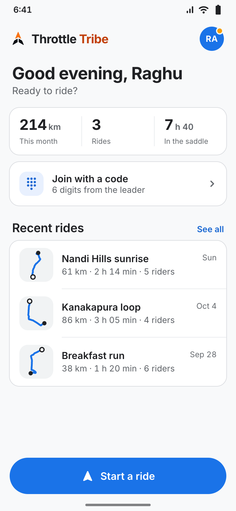
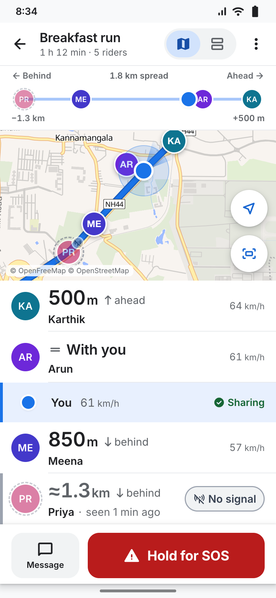
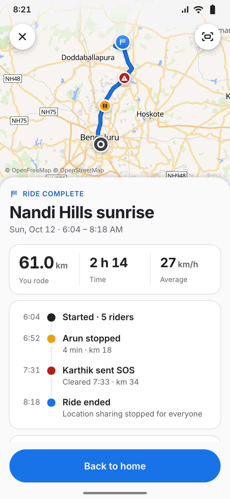
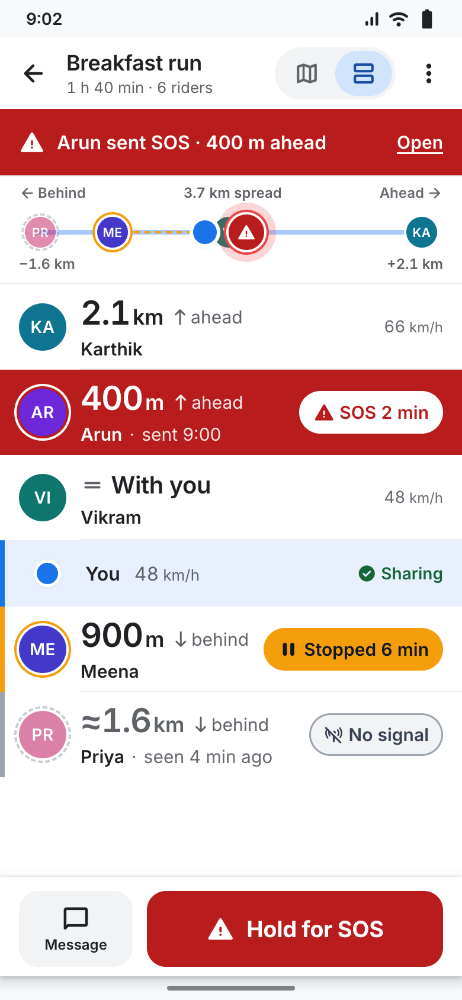
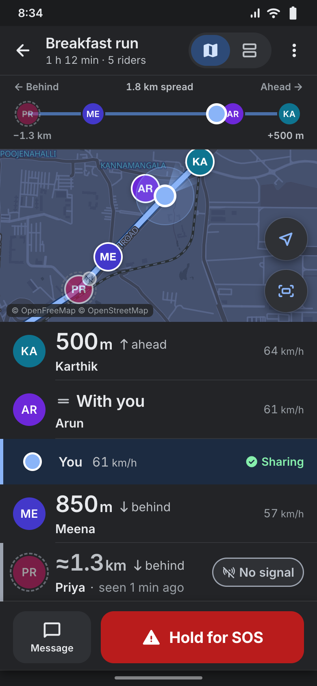
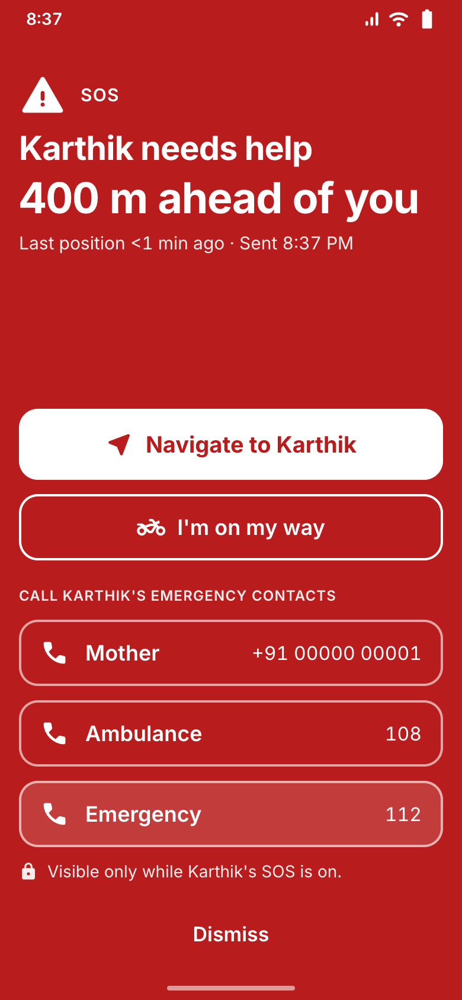
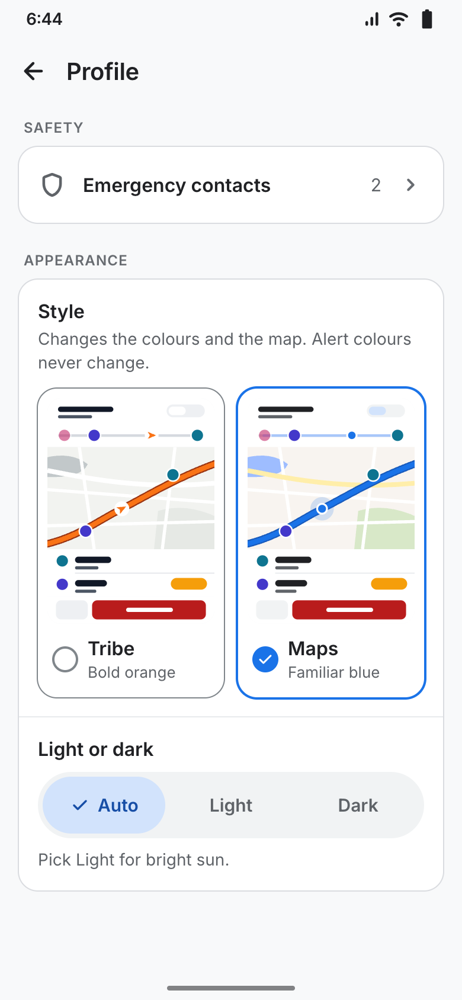
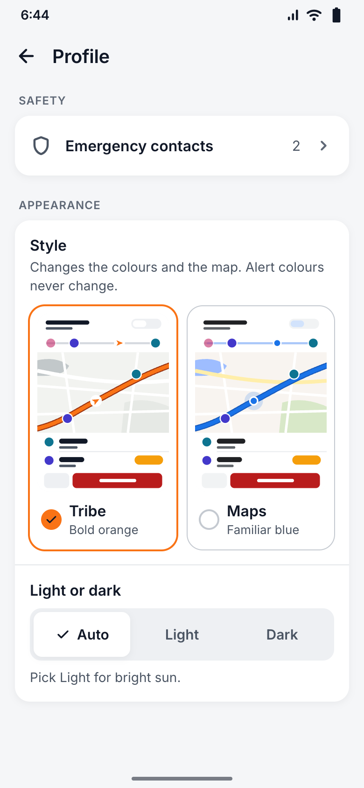

TRIBEHome · recent rides

MAPSHome · recent rides

TRIBELive · map + convoy

MAPSLive · map + convoy

TRIBESummary · route

MAPSSummary · route

TRIBELive · SOS / stopped / offline

MAPSLive · SOS / stopped / offline

MAPSLive · dark (fiord)

BOTHSOS takeover · unchanged

MAPSProfile › Appearance

TRIBEProfile › Appearance